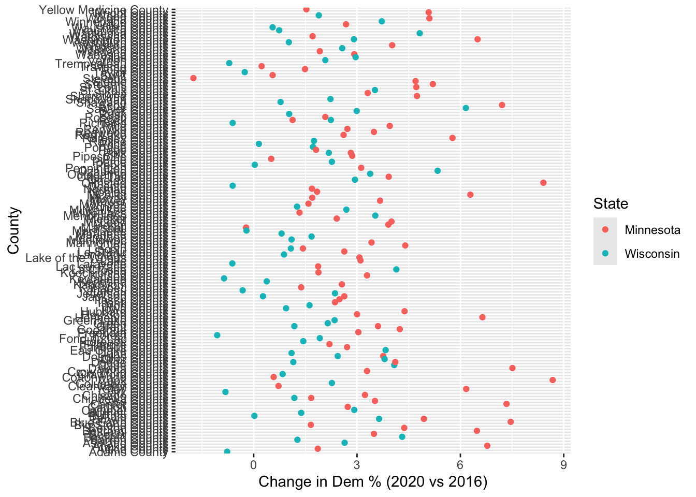
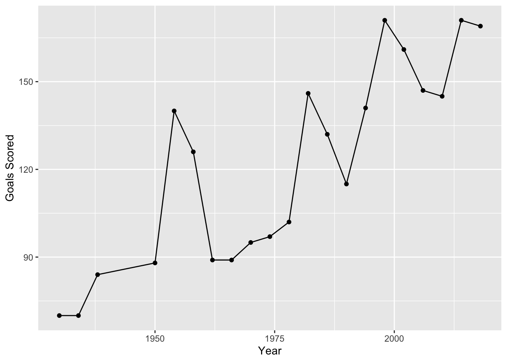

── Attaching core tidyverse packages ──────────────────────── tidyverse 2.0.0 ──
✔ dplyr 1.1.4 ✔ readr 2.1.5
✔ forcats 1.0.0 ✔ stringr 1.5.1
✔ ggplot2 3.5.1 ✔ tibble 3.2.1
✔ lubridate 1.9.3 ✔ tidyr 1.3.1
✔ purrr 1.0.2
── Conflicts ────────────────────────────────────────── tidyverse_conflicts() ──
✖ dplyr::filter() masks stats::filter()
✖ dplyr::lag() masks stats::lag()
ℹ Use the conflicted package (<http://conflicted.r-lib.org/>) to force all conflicts to become errors
elections <-read.csv("https://mac-stat.github.io/data/election_2020_county.csv")# Get a background maplibrary(socviz)data(county_map)# Make a choropleth maplibrary(RColorBrewer) # For the color scalelibrary(ggthemes) # For theme_mapelections |>mutate(county_fips =as.character(county_fips)) |>mutate(county_fips =ifelse(nchar(county_fips) ==4, paste0("0", county_fips), county_fips)) |>ggplot(aes(map_id = county_fips, fill =cut(repub_pct_20, breaks =seq(0, 100, by =10)))) +geom_map(map = county_map) +scale_fill_manual(values =rev(brewer.pal(10, "RdBu")), name ="% Republican") +expand_limits(x = county_map$long, y = county_map$lat) +theme_map() +theme(legend.position ="right") +coord_equal()
# Load tidyverse for data wrangling and plottinglibrary(tidyverse)# Exercise 1: select Practice# Create elections_small with only the specified columnselections_small <- elections %>%select(state_name, county_name, total_votes_20, repub_pct_20, dem_pct_20, total_votes_16, dem_pct_16)head(elections_small) # confirm it worked
# Exercise 2: filter Demo# Keep only counties in Hawaiielections_small %>%filter(state_name =="Hawaii")
state_name county_name total_votes_20 repub_pct_20 dem_pct_20
1 Hawaii Hawaii County 87814 30.63 66.88
2 Hawaii Honolulu County 382114 35.66 62.51
3 Hawaii Kauai County 33497 34.58 63.36
4 Hawaii Maui County 71044 31.14 66.59
total_votes_16 dem_pct_16
1 64865 63.61
2 285683 61.48
3 26335 62.49
4 51942 64.45
# Keep only counties in Hawaii or Delawareelections_small %>%filter(state_name %in%c("Hawaii", "Delaware"))
state_name county_name total_votes_20 repub_pct_20 dem_pct_20
1 Delaware Kent County 87025 47.12 51.19
2 Delaware New Castle County 287633 30.72 67.81
3 Delaware Sussex County 129352 55.07 43.82
4 Hawaii Hawaii County 87814 30.63 66.88
5 Hawaii Honolulu County 382114 35.66 62.51
6 Hawaii Kauai County 33497 34.58 63.36
7 Hawaii Maui County 71044 31.14 66.59
total_votes_16 dem_pct_16
1 74253 44.91
2 261468 62.30
3 105814 37.17
4 64865 63.61
5 285683 61.48
6 26335 62.49
7 51942 64.45
# Counties where GOP got > 93.97% in 2020elections_small %>%filter(repub_pct_20 >93.97)
state_name county_name total_votes_20 repub_pct_20 dem_pct_20
1 Texas Borden County 416 95.43 3.85
2 Texas King County 159 94.97 5.03
3 Texas Roberts County 550 96.18 3.09
total_votes_16 dem_pct_16
1 365 8.49
2 159 3.14
3 550 3.64
# Counties where GOP got ≥ 93.97% in 2020 (one more than above)elections_small %>%filter(repub_pct_20 >=93.97)
state_name county_name total_votes_20 repub_pct_20 dem_pct_20
1 Montana Garfield County 813 93.97 5.04
2 Texas Borden County 416 95.43 3.85
3 Texas King County 159 94.97 5.03
4 Texas Roberts County 550 96.18 3.09
total_votes_16 dem_pct_16
1 715 4.76
2 365 8.49
3 159 3.14
4 550 3.64
# Texas counties where Dems > 65% in 2020, Method 1 (two filters)elections_small %>%filter(state_name =="Texas") %>%filter(dem_pct_20 >65)
state_name county_name total_votes_20 repub_pct_20 dem_pct_20
1 Texas El Paso County 267215 31.56 66.66
2 Texas Presidio County 2217 32.52 65.99
3 Texas Travis County 610349 26.43 71.41
4 Texas Zavala County 4379 34.03 65.40
total_votes_16 dem_pct_16
1 210458 69.14
2 2203 66.18
3 462511 66.26
4 3390 77.67
# Texas counties where Dems > 65% in 2020, Method 2 (one filter)elections_small %>%filter(state_name =="Texas", dem_pct_20 >65)
state_name county_name total_votes_20 repub_pct_20 dem_pct_20
1 Texas El Paso County 267215 31.56 66.66
2 Texas Presidio County 2217 32.52 65.99
3 Texas Travis County 610349 26.43 71.41
4 Texas Zavala County 4379 34.03 65.40
total_votes_16 dem_pct_16
1 210458 69.14
2 2203 66.18
3 462511 66.26
4 3390 77.67
# Exercise 3: arrange Demo# Counties sorted lowest to highest GOP % in 2020elections_small %>%arrange(repub_pct_20) %>%head()
state_name county_name total_votes_20 repub_pct_20
1 District of Columbia District of Columbia 344356 5.40
2 Maryland Prince George's County 424855 8.73
3 Maryland Baltimore city 237461 10.69
4 Virginia Petersburg city 14118 11.22
5 New York New York County 694904 12.26
6 California San Francisco County 443458 12.72
dem_pct_20 total_votes_16 dem_pct_16
1 92.15 280272 92.85
2 89.26 351091 89.33
3 87.28 208980 85.44
4 87.75 13717 87.52
5 86.78 591368 87.17
6 85.27 365295 85.53
# Counties sorted highest to lowest GOP % in 2020elections_small %>%arrange(desc(repub_pct_20)) %>%head()
state_name county_name total_votes_20 repub_pct_20 dem_pct_20
1 Texas Roberts County 550 96.18 3.09
2 Texas Borden County 416 95.43 3.85
3 Texas King County 159 94.97 5.03
4 Montana Garfield County 813 93.97 5.04
5 Texas Glasscock County 653 93.57 5.97
6 Nebraska Grant County 402 93.28 4.98
total_votes_16 dem_pct_16
1 550 3.64
2 365 8.49
3 159 3.14
4 715 4.76
5 602 5.65
6 394 5.08
# Exercise 5: Pipe Series# a) Wisconsin counties where GOP lost in 2020, sorted by turnoutelections_small %>%filter(state_name =="Wisconsin", repub_pct_20 < dem_pct_20) %>%arrange(desc(total_votes_20)) %>%head()
state_name county_name total_votes_20 repub_pct_20 dem_pct_20
1 Wisconsin Milwaukee County 458971 29.27 69.13
2 Wisconsin Dane County 344791 22.85 75.46
3 Wisconsin Rock County 85360 43.51 54.66
4 Wisconsin La Crosse County 67884 42.25 55.75
5 Wisconsin Eau Claire County 58275 43.49 54.26
6 Wisconsin Portage County 40603 47.53 50.31
total_votes_16 dem_pct_16
1 434970 66.44
2 304729 71.38
3 75043 52.42
4 62785 51.61
5 54080 50.43
6 38123 48.59
# b) Swapping filter & arrange still yields same rows; filtering first reduces data before sorting.# c) Advantage: filtering early limits data volume for subsequent steps.# d) Delaware counties with GOP win indicatorelections_small %>%filter(state_name =="Delaware") %>%mutate(repub_win_20 = repub_pct_20 > dem_pct_20) %>%select(county_name, repub_pct_20, dem_pct_20, repub_win_20)
county_name repub_pct_20 dem_pct_20 repub_win_20
1 Kent County 47.12 51.19 FALSE
2 New Castle County 30.72 67.81 FALSE
3 Sussex County 55.07 43.82 TRUE
# e) If we select before mutate, repub_win_20 doesn't yet exist → error. Order matters when selecting new vars.# Exercise 6: DIY Pipe Series# a) MN counties and their 2020 Dem % from highest to lowestelections_small %>%filter(state_name =="Minnesota") %>%select(county_name, dem_pct_20) %>%arrange(desc(dem_pct_20))
county_name dem_pct_20
1 Ramsey County 71.50
2 Hennepin County 70.46
3 Cook County 65.58
4 St. Louis County 56.64
5 Dakota County 55.73
6 Olmsted County 54.16
7 Washington County 53.46
8 Blue Earth County 50.84
9 Clay County 50.74
10 Lake County 50.64
11 Nicollet County 50.31
12 Carlton County 49.58
13 Winona County 49.07
14 Rice County 48.76
15 Mahnomen County 48.26
16 Anoka County 47.79
17 Beltrami County 47.24
18 Carver County 46.37
19 Mower County 46.00
20 Scott County 45.52
21 Houston County 42.42
22 Goodhue County 41.23
23 Freeborn County 40.96
24 Norman County 40.80
25 Itasca County 40.61
26 Koochiching County 38.41
27 Watonwan County 38.20
28 Kittson County 38.12
29 Stevens County 37.80
30 Stearns County 37.58
31 Fillmore County 37.48
32 Steele County 37.47
33 Kandiyohi County 36.12
34 Aitkin County 35.98
35 Lyon County 35.94
36 Lac qui Parle County 35.79
37 Wabasha County 35.78
38 Grant County 35.58
39 Traverse County 35.46
40 Big Stone County 35.41
41 Pennington County 35.29
42 Pope County 35.27
43 Polk County 34.88
44 Cass County 34.68
45 Wright County 34.49
46 Hubbard County 34.42
47 Swift County 34.35
48 Crow Wing County 34.17
49 Chisago County 34.15
50 Becker County 33.96
51 Pine County 33.87
52 Le Sueur County 33.73
53 Chippewa County 33.67
54 Nobles County 33.65
55 Waseca County 33.65
56 Dodge County 33.47
57 Otter Tail County 32.85
58 Benton County 32.70
59 Douglas County 32.56
60 Brown County 32.48
61 Sherburne County 32.48
62 Faribault County 31.98
63 Red Lake County 31.47
64 Renville County 30.71
65 McLeod County 30.64
66 Yellow Medicine County 30.54
67 Lincoln County 30.08
68 Cottonwood County 30.03
69 Kanabec County 30.02
70 Martin County 30.02
71 Jackson County 29.99
72 Mille Lacs County 29.98
73 Wilkin County 29.91
74 Rock County 29.69
75 Murray County 29.60
76 Isanti County 29.45
77 Sibley County 28.60
78 Meeker County 28.58
79 Redwood County 28.43
80 Lake of the Woods County 27.87
81 Clearwater County 26.76
82 Pipestone County 26.44
83 Wadena County 26.35
84 Roseau County 25.98
85 Marshall County 25.33
86 Todd County 24.79
87 Morrison County 22.33
# b) mn_wi: change in Dem % for MN & WI, sorted by change ascendingmn_wi <- elections_small %>%filter(state_name %in%c("Minnesota", "Wisconsin")) %>%mutate(dem_change = dem_pct_20 - dem_pct_16) %>%select(state_name, county_name, dem_pct_20, dem_pct_16, dem_change) %>%arrange(dem_change)head(mn_wi)
state_name county_name dem_pct_20 dem_pct_16 dem_change
1 Minnesota Stevens County 37.80 39.55 -1.75
2 Wisconsin Forest County 34.06 35.12 -1.06
3 Wisconsin Kewaunee County 32.87 33.73 -0.86
4 Wisconsin Clark County 30.37 31.19 -0.82
5 Wisconsin Adams County 36.63 37.40 -0.77
6 Wisconsin Trempealeau County 40.86 41.57 -0.71
# c) Plot change in Dem % by county, colored by stateggplot(mn_wi, aes(x = dem_change, y = county_name, color = state_name)) +geom_point() +labs(x ="Change in Dem % (2020 vs 2016)", y ="County", color ="State")

# Exercise 7: summarize Demo# Median GOP % in 2020elections_small %>%summarize(median(repub_pct_20))
median(repub_pct_20)
1 68.29
# Named summaryelections_small %>%summarize(median_repub =median(repub_pct_20))
# A tibble: 50 × 3
state_name median_repub total_votes
<chr> <dbl> <int>
1 Alabama 70.6 2323304
2 Arizona 57.9 3387326
3 Arkansas 72.1 1219069
4 California 44.8 17495906
5 Colorado 56.2 3256953
6 Connecticut 41.0 1824280
7 Delaware 47.1 504010
8 District of Columbia 5.4 344356
9 Florida 64.6 11067456
10 Georgia 68 4997716
# ℹ 40 more rows
# Exercise 9: DIY Summaries# Total votes by state, sortedelections_small %>%group_by(state_name) %>%summarize(total_votes_state =sum(total_votes_20)) %>%arrange(desc(total_votes_state))
# A tibble: 50 × 2
state_name total_votes_state
<chr> <int>
1 California 17495906
2 Texas 11317911
3 Florida 11067456
4 New York 8616205
5 Pennsylvania 6925255
6 Illinois 6038850
7 Ohio 5922202
8 Michigan 5539302
9 North Carolina 5524801
10 Georgia 4997716
# ℹ 40 more rows
# Total Dem & GOP votes by stateelections_small %>%mutate(dem_votes =round(total_votes_20 * dem_pct_20 /100),rep_votes =round(total_votes_20 * repub_pct_20 /100)) %>%group_by(state_name) %>%summarize(dem_votes =sum(dem_votes), rep_votes =sum(rep_votes))
# A tibble: 50 × 3
state_name dem_votes rep_votes
<chr> <dbl> <dbl>
1 Alabama 849664 1441155
2 Arizona 1672127 1661671
3 Arkansas 423919 760641
4 California 11109642 6006031
5 Colorado 1804393 1364627
6 Connecticut 1080677 715315
7 Delaware 296274 200601
8 District of Columbia 317324 18595
9 Florida 5297131 5668600
10 Georgia 2473661 2461869
# ℹ 40 more rows
# States the Democrats won in 2020elections_small %>%mutate(dem_votes =round(total_votes_20 * dem_pct_20 /100),rep_votes =round(total_votes_20 * repub_pct_20 /100)) %>%group_by(state_name) %>%summarize(dem_votes =sum(dem_votes), rep_votes =sum(rep_votes)) %>%filter(dem_votes > rep_votes)
# A tibble: 26 × 3
state_name dem_votes rep_votes
<chr> <dbl> <dbl>
1 Arizona 1672127 1661671
2 California 11109642 6006031
3 Colorado 1804393 1364627
4 Connecticut 1080677 715315
5 Delaware 296274 200601
6 District of Columbia 317324 18595
7 Georgia 2473661 2461869
8 Hawaii 366121 196865
9 Illinois 3471916 2446931
10 Maine 430466 359897
# ℹ 16 more rows
# Exercise 10: Practice on World Cup dataworld_cup <-read.csv("https://raw.githubusercontent.com/rfordatascience/tidytuesday/master/data/2022/2022-11-29/worldcups.csv")# Years Brazil wonworld_cup %>%filter(winner =="Brazil") %>%pull(year)
[1] 1958 1962 1970 1994 2002
# Top 6 World Cups by attendanceworld_cup %>%arrange(desc(attendance)) %>%head(6)
year host winner second third fourth
1 1994 USA Brazil Italy Sweden Bulgaria
2 2014 Brazil Germany Argentina Netherlands Brazil
3 2006 Germany Italy France Germany Portugal
4 2018 Russia France Croatia Belgium England
5 1998 France France Brazil Croatia Netherlands
6 2002 Japan, South Korea Brazil Germany Turkey South Korea
goals_scored teams games attendance
1 141 24 52 3568567
2 171 32 64 3441450
3 147 32 64 3367000
4 169 32 64 3031768
5 171 32 64 2859234
6 161 32 64 2724604
# Univariate plot of goals_scoredggplot(world_cup, aes(x = goals_scored)) +geom_histogram(binwidth =10) +labs(x ="Goals Scored", y ="Count of World Cups")
# Bivariate: goals_scored over the yearsggplot(world_cup, aes(x = year, y = goals_scored)) +geom_point() +geom_line() +labs(x ="Year", y ="Goals Scored")

Source Code
---title: "Wrangling"---```{r}# Load tidyverse & datalibrary(tidyverse)elections <-read.csv("https://mac-stat.github.io/data/election_2020_county.csv")# Get a background maplibrary(socviz)data(county_map)# Make a choropleth maplibrary(RColorBrewer) # For the color scalelibrary(ggthemes) # For theme_mapelections |>mutate(county_fips =as.character(county_fips)) |>mutate(county_fips =ifelse(nchar(county_fips) ==4, paste0("0", county_fips), county_fips)) |>ggplot(aes(map_id = county_fips, fill =cut(repub_pct_20, breaks =seq(0, 100, by =10)))) +geom_map(map = county_map) +scale_fill_manual(values =rev(brewer.pal(10, "RdBu")), name ="% Republican") +expand_limits(x = county_map$long, y = county_map$lat) +theme_map() +theme(legend.position ="right") +coord_equal()``````{r}# Load tidyverse for data wrangling and plottinglibrary(tidyverse)# Exercise 1: select Practice# Create elections_small with only the specified columnselections_small <- elections %>%select(state_name, county_name, total_votes_20, repub_pct_20, dem_pct_20, total_votes_16, dem_pct_16)head(elections_small) # confirm it worked# Exercise 2: filter Demo# Keep only counties in Hawaiielections_small %>%filter(state_name =="Hawaii")# Keep only counties in Hawaii or Delawareelections_small %>%filter(state_name %in%c("Hawaii", "Delaware"))# Counties where GOP got > 93.97% in 2020elections_small %>%filter(repub_pct_20 >93.97)# Counties where GOP got ≥ 93.97% in 2020 (one more than above)elections_small %>%filter(repub_pct_20 >=93.97)# Texas counties where Dems > 65% in 2020, Method 1 (two filters)elections_small %>%filter(state_name =="Texas") %>%filter(dem_pct_20 >65)# Texas counties where Dems > 65% in 2020, Method 2 (one filter)elections_small %>%filter(state_name =="Texas", dem_pct_20 >65)# Exercise 3: arrange Demo# Counties sorted lowest to highest GOP % in 2020elections_small %>%arrange(repub_pct_20) %>%head()# Counties sorted highest to lowest GOP % in 2020elections_small %>%arrange(desc(repub_pct_20)) %>%head()# Exercise 4: mutate Demo# a) Create diff_20 = repub_pct_20 − dem_pct_20elections_small %>%mutate(diff_20 = repub_pct_20 - dem_pct_20) %>%head()# b) Compute repub_votes_20 via roundingelections_small %>%mutate(repub_votes_20 =round(total_votes_20 * repub_pct_20 /100)) %>%head()# c) Logical column: did GOP win in 2020?elections_small %>%mutate(repub_win_20 = repub_pct_20 > dem_pct_20) %>%head()# Part b: Define Dem change and indicator# Change in Dem support 2020 vs 2016elections_small %>%mutate(dem_change = dem_pct_20 - dem_pct_16) %>%head()# Was Dem support higher in 2020 than 2016?elections_small %>%mutate(dem_higher_20 = dem_pct_20 > dem_pct_16) %>%head()# Exercise 5: Pipe Series# a) Wisconsin counties where GOP lost in 2020, sorted by turnoutelections_small %>%filter(state_name =="Wisconsin", repub_pct_20 < dem_pct_20) %>%arrange(desc(total_votes_20)) %>%head()# b) Swapping filter & arrange still yields same rows; filtering first reduces data before sorting.# c) Advantage: filtering early limits data volume for subsequent steps.# d) Delaware counties with GOP win indicatorelections_small %>%filter(state_name =="Delaware") %>%mutate(repub_win_20 = repub_pct_20 > dem_pct_20) %>%select(county_name, repub_pct_20, dem_pct_20, repub_win_20)# e) If we select before mutate, repub_win_20 doesn't yet exist → error. Order matters when selecting new vars.# Exercise 6: DIY Pipe Series# a) MN counties and their 2020 Dem % from highest to lowestelections_small %>%filter(state_name =="Minnesota") %>%select(county_name, dem_pct_20) %>%arrange(desc(dem_pct_20))# b) mn_wi: change in Dem % for MN & WI, sorted by change ascendingmn_wi <- elections_small %>%filter(state_name %in%c("Minnesota", "Wisconsin")) %>%mutate(dem_change = dem_pct_20 - dem_pct_16) %>%select(state_name, county_name, dem_pct_20, dem_pct_16, dem_change) %>%arrange(dem_change)head(mn_wi)# c) Plot change in Dem % by county, colored by stateggplot(mn_wi, aes(x = dem_change, y = county_name, color = state_name)) +geom_point() +labs(x ="Change in Dem % (2020 vs 2016)", y ="County", color ="State")# Exercise 7: summarize Demo# Median GOP % in 2020elections_small %>%summarize(median(repub_pct_20))# Named summaryelections_small %>%summarize(median_repub =median(repub_pct_20))# Multiple summarieselections_small %>%summarize(median_repub =median(repub_pct_20), total_votes =sum(total_votes_20))# Exercise 8: group_by + summarize# Summary by stateelections_small %>%group_by(state_name) %>%summarize(median_repub =median(repub_pct_20), total_votes =sum(total_votes_20))# Exercise 9: DIY Summaries# Total votes by state, sortedelections_small %>%group_by(state_name) %>%summarize(total_votes_state =sum(total_votes_20)) %>%arrange(desc(total_votes_state))# Total Dem & GOP votes by stateelections_small %>%mutate(dem_votes =round(total_votes_20 * dem_pct_20 /100),rep_votes =round(total_votes_20 * repub_pct_20 /100)) %>%group_by(state_name) %>%summarize(dem_votes =sum(dem_votes), rep_votes =sum(rep_votes))# States the Democrats won in 2020elections_small %>%mutate(dem_votes =round(total_votes_20 * dem_pct_20 /100),rep_votes =round(total_votes_20 * repub_pct_20 /100)) %>%group_by(state_name) %>%summarize(dem_votes =sum(dem_votes), rep_votes =sum(rep_votes)) %>%filter(dem_votes > rep_votes)# Exercise 10: Practice on World Cup dataworld_cup <-read.csv("https://raw.githubusercontent.com/rfordatascience/tidytuesday/master/data/2022/2022-11-29/worldcups.csv")# Years Brazil wonworld_cup %>%filter(winner =="Brazil") %>%pull(year)# Top 6 World Cups by attendanceworld_cup %>%arrange(desc(attendance)) %>%head(6)# Univariate plot of goals_scoredggplot(world_cup, aes(x = goals_scored)) +geom_histogram(binwidth =10) +labs(x ="Goals Scored", y ="Count of World Cups")# Summary stats: min, median, max goals_scoredworld_cup %>%summarize(min_goals =min(goals_scored),median_goals =median(goals_scored),max_goals =max(goals_scored))# Bivariate: goals_scored over the yearsggplot(world_cup, aes(x = year, y = goals_scored)) +geom_point() +geom_line() +labs(x ="Year", y ="Goals Scored")```